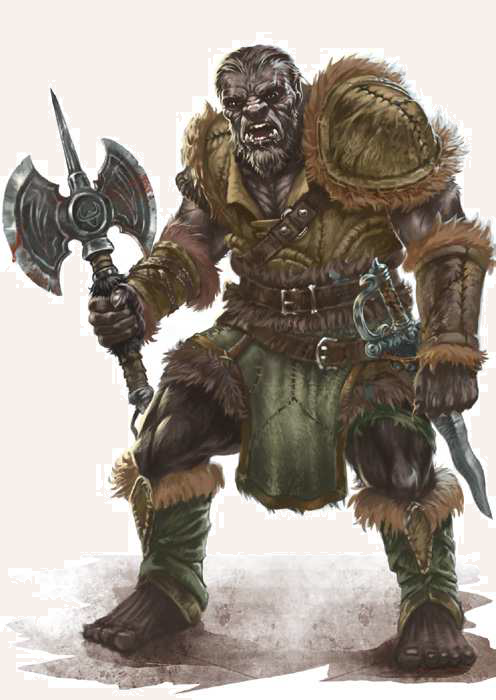

Kaum etwas mag im nördlichen Mittelreich mehr Angst und Schrecken verbreiten als der Ausruf „Orks!“. Umgeben von ungastlichen Höhenzügen, sind die weiten Steppen des Orklandes Heimat der Schwarzpelze, wie sie von den Menschen auch genannt werden. Ihre Raub- und Heerzüge sind gefürchtet, und ihre fremdartige Kultur steht ihrem Drang nach Kampf und Beute in Barbarentum kaum nach. Orks sind etwas kleiner als Menschen, jedoch erheblich kräftiger gebaut und ihre Arme sind im Vergleich zu Menschen deutlich länger. Orks gelten als ausgesprochen kälteunempindlich und ihre verhornten Fußsohlen trotzen selbst den steinigen Pässen der Gebirge. Die dichte, dunkelbraune bis schwarze Körperbehaarung geht am Hinterkopf in langes Haupthaar über. Ihr Gesicht ist hingegen kaum behaart und wird von einem vorspringender Kiefer mit Hauern, einer platten Nase und einer breiten Stirn dominiert.
Verbreitung
Die größte Ansiedlung von Orks indet sich im nach ihnen benannten Orkland.
Hier leben jenseits der einzigen orkischen Stadt Khezzara mehrere hundert Sippen, die einem der sieben großen Stämme zugeordnet werden.
Die Orichai des Orklandes umfassen mehrere zehntausend Angehörige und bestehen vor allem aus Jägern, Sammlern und halb sesshaften Bauern, während die zahlenmäßig ebenbürtigen Zholochai als urtümliche Jäger und aggressive Krieger nomadisch zwischen Orkland und den Gipfeln der Blutzinnen leben.
In den letzten Jahren sind besonders die schnellen Reiterhorden der Zholochai bei Raubzügen aufgefallen.
Die Truanzhai, gut 12.000 Köpfe stark, siedeln im Bodirtal und betreiben dort Viehzucht und Handel.
Für orkische Verhältnisse gelten sie als geradezu friedlich.
Die Mokolash haben sich isoliert von den anderen Stämmen in den Quellsümpfen des Bodir angesiedelt und leben vom Fischfang, während die Tscharshai als Händler in schweren Wagen durch die Steppe reisen, die rollenden Festungen ähneln.
Zu guter Letzt seien noch die Olochtai genannt, die selbst von den anderen Sippen für primitive Barbaren gehalten werden.
Man indet sie meist im Olochtai-Gebirge und dem Waskirer Hochland, wo sie in einfachen Höhlen wohnen.
Vor der Kälte der Berge sind sie durch ein besonders dichtes graues Fell geschützt.
Nach den letzten jüngsten Eroberungszügen der Orks haben sich außerdem einige Orksippen im Svellttal angesiedelt, wo sie von den Menschen Tribute verlangen.
Von den anderen Stämmen wird ihnen jedoch vorgeworfen, zu eng mit den menschlichen Glatthäuten des Svelltlandes zusammenzuleben und dadurch zunehmend zu verweichlichen.
Jenseits des Orklandes kann man zudem einzelne Sippen in den Weiten der Brydia inden, während weiter nördlich in den Eiszinnen ein Stamm weißpelziger Orks lebt.
Ansonsten kann man fast überall in Aventurien auf Gruppen von orkischen Räubern treffen.
Die Yurach, Ausgestoßene, wurden wegen Feigheit oder Schwäche von ihrer Sippe vertrieben.
Nicht selten verbrüdern sie sich mit Goblins oder menschlichen Räubern, um gemeinsam Reisende zu überfallen.
Diese nicht selten halb verhungerten Gestalten sollte man jedoch niemals mit echten orkischen Kriegern gleichsetzen, die zu zehntausenden im Orkland lauern.
Lebensweise
Der orkische Lebenszyklus verläuft schneller als bei Menschen, weshalb sie früher geschlechtsreif werden.
Allerdings weilen sie auch selten mehr als 40 Jahre auf Dere.
Sie leben in Sippenverbänden, deren Alltag vom Recht des Stärkeren auf der einen und von einem strengen Kastensystem auf der anderen Seite bestimmt wird.
Sklaven und Frauen stehen darin nur wenig höher als die Ausgestoßenen.
Darauf folgen Bauern, Handwerker und Jäger.
Elitekrieger werden nur noch vom Häuptling und dem Schamanen übertroffen, die meist gemeinsam einer Sippe vorstehen.
Das Kastensystem deiniert die Position des Einzelnen jedoch nicht nach seiner Herkunft oder seiner Geburt, sondern nach seinen Fähigkeiten und seiner Kraft.
So kann es theoretisch jeder Ork zum Häuptling bringen, wenn er nur stark und brutal genug ist.
Uneingeschränkter Anführer aller Orks ist der Aikar Brazoragh, der Auserwählte des orkischen Kriegsgottes.
Neben Brazoragh, der oftmals als Stier dargestellt wird, wird auch dessen göttlicher Vater Tairach hoch verehrt, der die Verstorbenen Krieger im Totenreich erwartet.
Es dürfte für die Mentalität der Orks bezeichnend sein, dass Brazoragh seinen Vater einst erschlagen haben soll.
Oberste Diener Tairachs sind die Schamanen der Orks, die zusammen mit einem Häuptling die jeweiligen Sippen und Stämme anführen.
Sie sind für ihre fantastischen Gedächtnisleistungen bekannt, wird die Geschichte der Schwarzpelze doch rein mündlich von Schamane zu Schamane weiter gereicht.
Nur ihnen ist es zu verdanken, dass die Legenden der Orks in Aventurien über 40.000 Jahre zurückreichen.
Ihre Sagen und die so vielschichtige wie kriegerische Kultur der Orks werden in der Hochsprache Ologhaijan weitergegeben, während einfache Schwarzpelze und Yurach, wie man die Ausgestoßenen nennt, die Vulgärsprache Oloarkh verwenden.
Ogersche Namen:
weiblich: Von Orkfrauen, denen in der Stammesgesellschaft ohnehin keine nennenswerte Bedeutung eingeräumt wird, sind keine Namen überliefert.
männlich: Airakh, Ash(i)rraz, Azzek, Brazoch, Burchai, Byakkrak, Dradgk, Drasok, Drugh, Garvash, Garzlokh, Gharrai, Ghairazz, Girkush, Grakshazz, Gryazhai, Harkhash, Hulgharruk, Jurran, Kershoi, Khaidach, Khurrach, Khurraz, Mardukh, Naggai, Nargazz, Netragh, Orchegg(z), Raszech, Sadrak, Sarkhai, Shardur, Sharraz, Shurrak, Tairon, Thurraz, Uigar, Varrakh, Yagu(ch), Yorrak
Verdiente Krieger, Schamanen oder Zauberwirker führen häuig einen klangvollen Beinamen wie: Blutauge, Blutfaust, Einohr, Gelbzahn, Knochenbrecher, Schattenpelz oder Steinhand
Ork
Größe: 1,55 bis 1,70 Schritt Körpergröße
Gewicht: 60 bis 75 Stein
Eigenschaften:
MU 15
KL 10
IN 11
CH 10
FF 13
GE 12
KO 14
KK 13
LeP: 36
AsP: -
KaP: -
INI: 14+1W6
SK: -1
ZK: 2
GS: 8
AW: 6
Waffenlos:
AT: 12
PA: 6
TP: 1W6
RW: kurz
Säbel:
AT: 12
PA: 6
TP: 1W6+3
RW: mittel
Speer:
AT: 12
PA: 6
TP: 1W6+4
RW: lang
Streitaxt:
AT: 12
PA: 5
TP: 1W6+4
RW: mittel
Kurzbogen:
FK: 12
LZ: 1
TP: 1W6+4
RW: 10/50/80
RS/BE: 0/0
Aktionen: 1
Vor- und Nachteile: Dunkelsicht I, Kälteresistenz, Zäher Hund / Schlechte Eigenschaft (Aberglaube, Jähzorn)
Sonderfertigkeiten: Wuchtschlag I (Waffenlos, Streitaxt)
Talente: Klettern 5 (15/12/13), Körperbeherrschung 4 (12/12/14), Kraftakt 4 (14/13/13), Schwimmen 3 (12/14/13), Selbstbeherrschung 5 (15/15/14), Sinnesschärfe 4 (10/11/11), Verbergen 7 (15/11/12), Einschüchtern 5 (15/11/10), Menschenkenntnis 3 (10/11/10), Überreden 3 (15/11/10), Willenskraft 4 (15/11/10)
Anzahl: 1 oder 1W6+1 (Orkbande) oder 2W20+10 (Orksippe)
Größenkategorie: mittel
Typus: Kulturschaffender, humanoid
Kampfverhalten: Orks versuchen zunächst, ihre Gegner einzuschüchtern, oder lauern ihnen auf. Sie versuchen sich mit den stärksten Gegnern zu messen, da ein Sieg über diese den meisten Ruhm einbringt. Dennoch haben Orks ein anderes Ehrverständnis als Menschen, sodass sie auch zu hinterhältigen Tricks greifen, um den Sieg zu erringen. Auch am Boden liegende Gegner werden angegriffen, vor allem mit Wuchtschlägen. Der Einsatz von Fernkampfwaffen ist für Orks in jeder Situation legitim.
Flucht: individuell (meist nach Verlust von 50% der LeP)
Erfahren: MU 16 statt 15, KK 14 statt 13; LeP 38 statt 36; Säbel AT 13 / PA 8, Streitaxt AT 13 / PA 7; zusätzlich SF Finte I; Körperbeherrschung 6 statt 4, Kraftakt 7 statt Selbstbeherrschung 8 statt 5, Sinnesschärfe 6 statt 4, Verbergen 9 statt 7, Einschüchtern 7 statt 5, Menschenkenntnis 4 statt 3, Willenskraft 6 statt 4
Kompetent: MU 16 statt 15, KO 15 statt 14, KK 15 statt 13; LeP 42 statt 36; Waffenlos AT 14 / PA 8 / TP 1W6+1, Säbel AT 14 / PA 8, Streitaxt AT 14 / PA 7 / TP 1W6+5; zusätzlich SF Finte I, Wuchtschlag II; Körperbeherrschung 8 statt 4, Kraftakt 9 statt Selbstbeherrschung 10 statt 5, Sinnesschärfe 8 statt 4, Verbergen 10 statt 7, Einschüchtern 9 statt 5, Menschenkenntnis 5 statt 3, Willenskraft 8 statt 4
| LeP-Verlust | Schmerz | |
|---|---|---|
| 27 LeP (¾) | +1 Schmerz | |
| 16 LeP (½) | +1 Schmerz | |
| 9 LeP (¼) | +1 Schmerz | |
| 5 LeP und weniger | +1 Schmerz |